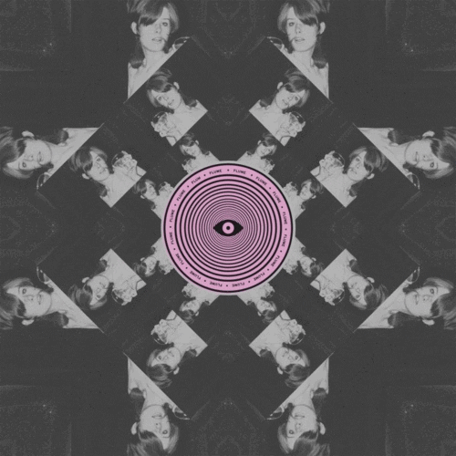
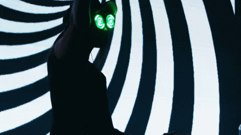

DIMENSION 1: MUSIC IS THE MOST IMPORTANT
In this realm, these are types of genres and artists that I have experienced and have
so far been my favorite. With raves, music is the first that you want to learn before you actually get into
raving or there is no point to the festival itself. In other words, music is the best part to the EDM culture.
HOUSE MUSIC
This is the stage where all the shufflers come to play. Shuffling? If that's what
you're wondering... Well it's a style of dance shown down below. I personally love to shuffle and although
I've only been doing it for a couple of months, house music is my #1. There are different types of house music;
You've got your deep house, trance house, funky house, electro house, ghetto house, the list goes on forever.
If you like the unts-unts-unts type beat, this style is for you.
this is the music for you.

BASS/DUBSTEP
Headbanger land! This is all about the bass. It's completely different to house and a bit more hardcore,
but still one of my favorites. This stage is full of bass, wubs, and headbangers. Just like house, there are so many
different types of bass music, but I'd rather list a couple of artists that I personally enjoy.
- Excision
- Riot Ten
- Skrillex
- Jauz
- NGHTMARE
- SVDDEN DEATH
- PEEKABOO

FLUME
This is my number one artist. His style of music is unique and gives off such a good vibe when you listen to him.
What I like about him the most, is that Flume doesn't necessarily have a genre because he is his own genre. His music
has such a spiritual sound to him and literally trances you into his sound.

JOYRYDE
In a way he is like house music, but he adds his own touch. You could also say he has bass like style with a hint of trap.
He gets my body moving every time I hear his music. Definitely the type that makes you want to dance.
REZZ
Many refer to her as Space Mom. She doesn't specialize to a genre either, but if I could describe her style of music... I would
say it's a lot of bass but not the headbanger type. It's more mellow with a trance feel to it. She loves to suck you into her music.

I could go on forever with all the types of genres and artists that I like, but it would be never ending. Here is a personalized spotify
playlist instead.